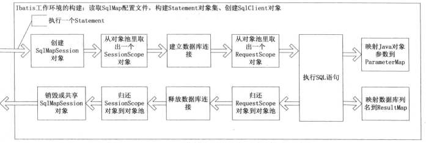

前言
iBatis框架主要的类层次结构
总体来说,iBatis的系统结构还是比较简单的,它主要完成两件事,一为根据JDBC规范建立与数据库的连接,二是通过反射打通Java对象与数据库参数交互之间相互转化的关系
iBatis的框架结构也是按照这种思想来组织类层次结构的,其实它是一种典型的交互式框架.先期准备好交互的必要条件,然后构造一个交互的环境,在交互环境中还划分成会话,每次会话也有一个环境,当这些环境都准备好了以后,剩下的就是交换数据了,其实只要涉及网络通信,一般都会是类似的处理方式
iBatis框架的设计策略
iBatis的主要设计目的还是为了让我们在执行SQL时对输入输出的数据的管理更加方便,所以方便得让我们写出SQL和方便获取SQL的执行结果才是iBatis的核心竞争力,那么iBatis是怎么体现它的核心竞争力呢?
iBatis框架的一个重要组成部分就是其SqlMap配置文件,SqlMap配置文件的核心是Statement语句包括CIUD iBatis通过解析SqlMap配置文件得到的所有的Statement执行语句,同时会形成ParameterMap,ResultMap两个对象,用于处理参数和解析后交给数据库处理的SQL对象,这样除了数据库的连接,一条SQL语句的执行添加已经具备了.
数据映射的大体过程是这样的:
根据在Statement中定义的SQL语句,解析出其中的参数,按照其出现的顺序保存在Map集合中,并按照在Statement中定义的ParameterMap对象类型解析出参数的Java数据类型,根据其数据类型构建TypeHandler对象,参数值的复制是通过DateExchange对象完成的
iBatis框架的运行原理
下图描述了整个过程中的主要执行步骤

上图中描述的SqlMapSession对象的创建和释放根据不同的情况会有所不同,因为SqlMapSession负责创建数据库的连接,包括对事务的管理,iBatis即可以管理事务又可以由外部管理,iBatis自己管理是通过共享SqlMapSession对象实现的,多个Statement执行时共享一个SqlMapSession实例,而且线程都是安全的,如果是外部程序管理就要自己控制SqlMapSession对象的生命周期.
本书中对于ibatis描述不够深入,仅作简单记载;